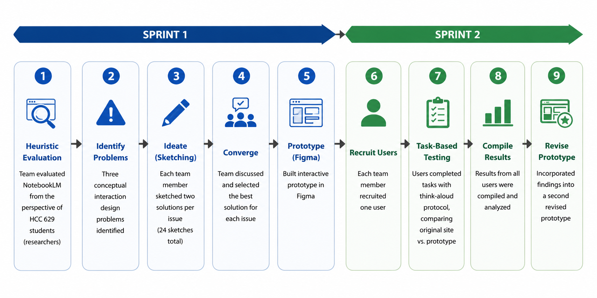
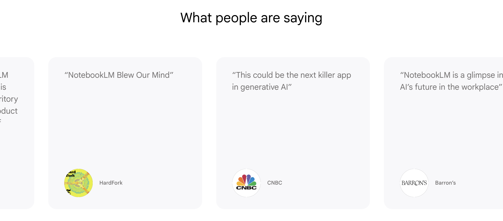

Process of Interaction Design
This portfolio documents work completed for HCC 629: Fundamentals of Human-Centered Computing at the University of Maryland, Baltimore County. It presents a structured case study applying three core interaction design principles to a real-world AI website, following the Design Thinking process across two sprints.
Case Study
NotebookLM Interaction Design Redesign (notebooklm.google)
| Dates | 17, April 2026 – 30, April 2026 |
| Role | Ideation, Sketching, Prototyping, and User Testing |
| Team name | Prototype Pilots |
| Team members | Soham Khisa, Ishika Tarin, Raabit Hassan, Sudipta Mondal |
| Tools | Figma, Google Docs, Google Slides, Apple Preview |
| Skills | Hidden Affordance Grid Design Gulf of Execution Usability Testing Think-Aloud Protocol Figma Prototyping Divergent & Convergent Thinking |

1. Context & Problem Statement
Google's NotebookLM (notebooklm.google) is an AI-powered research assistant designed to help users process large amounts of text: research papers, books, and documents. Our target user population is the researcher community: graduate students and academics who rely on the tool for efficient, targeted information retrieval. Despite its powerful capabilities, the site contains three notable interaction design problems that create friction for this user group, identified through heuristic evaluation and user testing based on principles we learned from HCC 629 course.2. Design Process


Issue:
The NotebookLM landing page contains a horizontally auto-scrolling customer review carousel.
Each card links to its source publication, but there is no visual cue — no button, no underline,
no hover state — indicating the cards are clickable. The auto-scroll also cannot be manually
controlled. This is a hidden affordance: the interaction is possible but perceptually invisible.
Ideation: Raabit added dedicated "open in new tab" buttons on each card. Ishika enclosed the source logo in a defined box and added a "Go to website" label. I underlined source links or added a visible border around the clickable region. Sudipta used a pulsing hover glow and progressive card expansion to reveal interactivity. We selected the explicit "Go to website" CTA button design, as visible call-to-action buttons provide the clearest signifier for discoverability without requiring hover exploration.

Redesign (v1):
Each review card was given a visible "Go to website" button. User 2 testing showed the user
found the source link within 5 seconds on the redesign, compared to failing to complete the
task within 10 seconds on the original.

Redesign (v2):
Based on User 2's feedback, left and right navigation arrows were added to both sides of the
carousel, giving users manual control over scrolling in addition to the CTA buttons.

Issue:
The landing page feature section uses a two-column layout with substantial unused whitespace
on both sides — more prominent on wider displays. Left-column modules have far more empty space
than their right-column counterparts, creating an uneven layout. Users must scroll through more
vertical space than necessary to consume the same content.
Ideation: Raabit proposed a 12-column modular grid with equal-height rows. Ishika designed a modular card layout and a row-based three-part structure. I applied a golden ratio layout and a uniform equal-module grid. Sudipta designed a 2×2 modular grid and a two-column alternating image-text layout. The team selected an equal-sized card modular grid, giving each feature its own consistently sized card with balanced spacing for a predictable, scannable layout.

Redesign:
The redesigned grid allowed User 1 to read the headings of four content blocks in approximately
10 seconds, compared to 15–20 seconds on the original — roughly doubling the content consumed
in the same amount of screen space.

Issue:
When a user uploads a document, NotebookLM immediately generates a full-document summary
without asking what the user wants to focus on. Users who need only a specific section
summarized must wait for the full summary, then craft a follow-up prompt — sometimes returning
to the document to find a page number. The interface does not support the user's actual goal
path, creating a gulf of execution.
Ideation: Raabit proposed an overlay modal with a text-crop tool and a split-view document panel. Ishika designed a highlight-and-select interface with upload confirmation feedback. Soham offered preview-based page selection and a per-source dropdown selector. Sudipta proposed ready-made query options and progressive disclosure of prompt suggestions. The team selected a document preview modal with text highlighting: after uploading, users see a preview and can highlight the section they want before clicking "Select the highlighted part," directly bridging the gulf between user goal and system action.

Redesign (v1):
Users 3 and 4 completed the targeted-summary task in 3 steps on the redesign vs. 5 steps
on the original. User 3 found the targeted summary more useful and relevant.

Redesign (v2):
User 4 noted that the option to summarize the whole document was missing. A
"Proceed without highlighting" button was added to the modal, restoring
full-document summarization as an explicit choice alongside the targeted workflow.
3. Outcome
Three interaction design violations were identified, prototyped, and tested across two sprints. All three redesigns measurably outperformed the original NotebookLM interface: the grid redesign halved content-scanning time, the affordance redesign enabled users to find source links they could not previously locate, and the gulf-of-execution redesign reduced task steps by 40% (from 5 to 3). A second prototype incorporated real user feedback, adding carousel navigation arrows and restoring full-document summarization as a user choice. The final prototype better serves researchers by reducing unnecessary scrolling, making the review carousel's interactivity apparent, and bridging the gap between user intent and AI action before summarization begins. View Interactive Prototype →
4. Reflection & Lessons Learned
This project reinforced that design problems are rarely caused by a single oversight — NotebookLM is a powerful tool, but several usability issues stemmed from a lack of intentionality in key interaction moments. Solving one problem without testing can inadvertently create another: our v1 gulf-of-execution redesign removed the full-document summary option entirely, which user testing caught before it became permanent.
Working across four team members highlighted how different people notice different things. Divergent ideation produced 24 sketches, several of which were genuinely novel and would not have emerged from a single designer's perspective. Defining measurable usability criteria before testing (time in seconds, number of steps) made it easier to communicate the impact of our redesigns objectively rather than relying solely on qualitative impressions.
For collaboration, Figma worked excellently for prototyping together, Messenger handled asynchronous discussion, and Google Meet with screen sharing was effective for live convergent decisions. If repeated, the team would establish clearer role assignments earlier to reduce duplication during ideation.